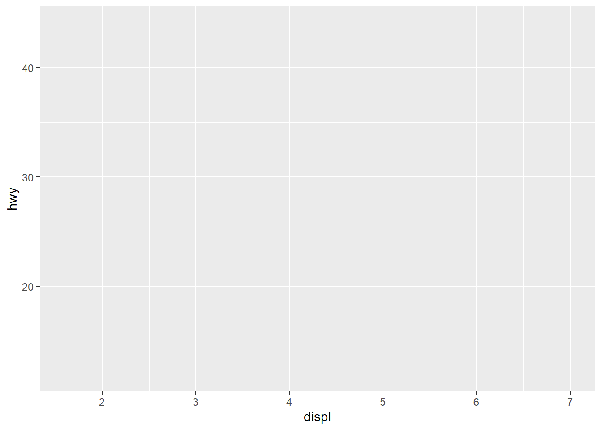
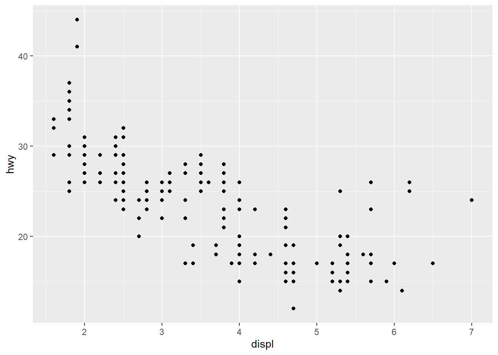
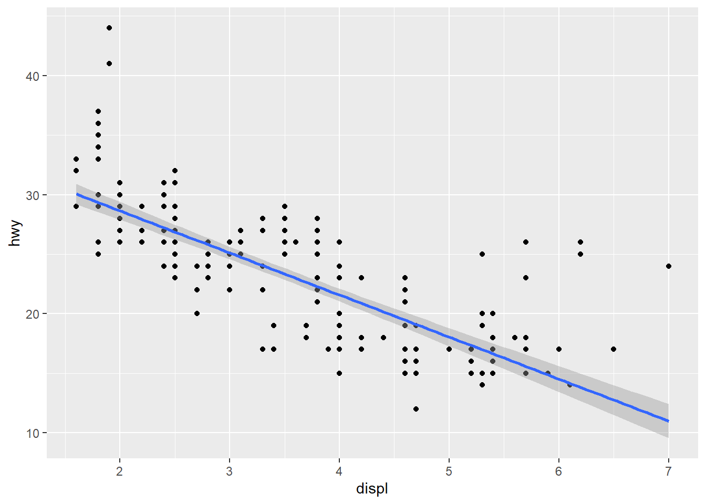
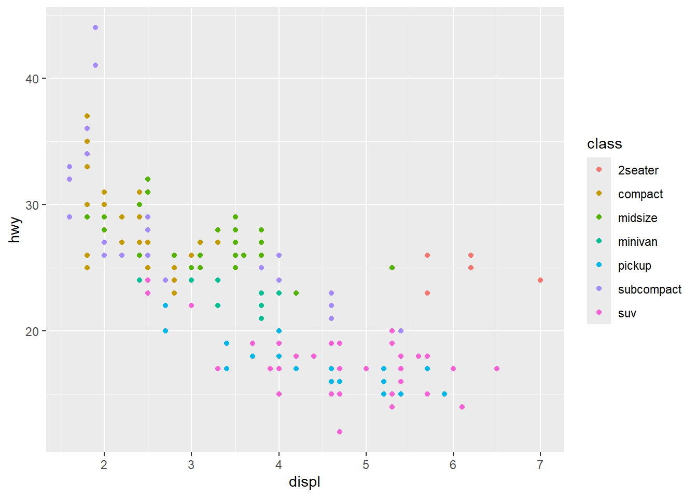
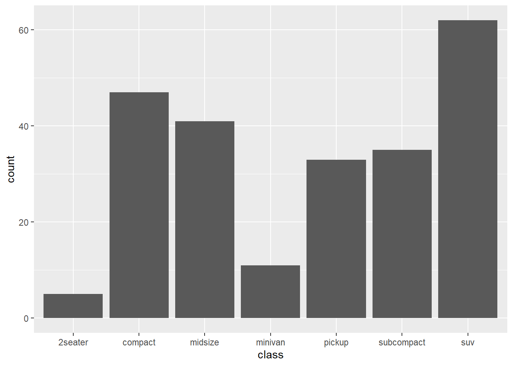
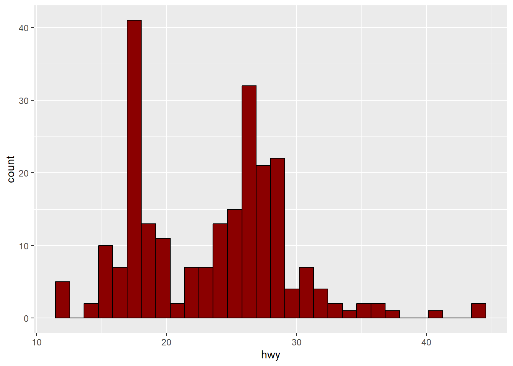
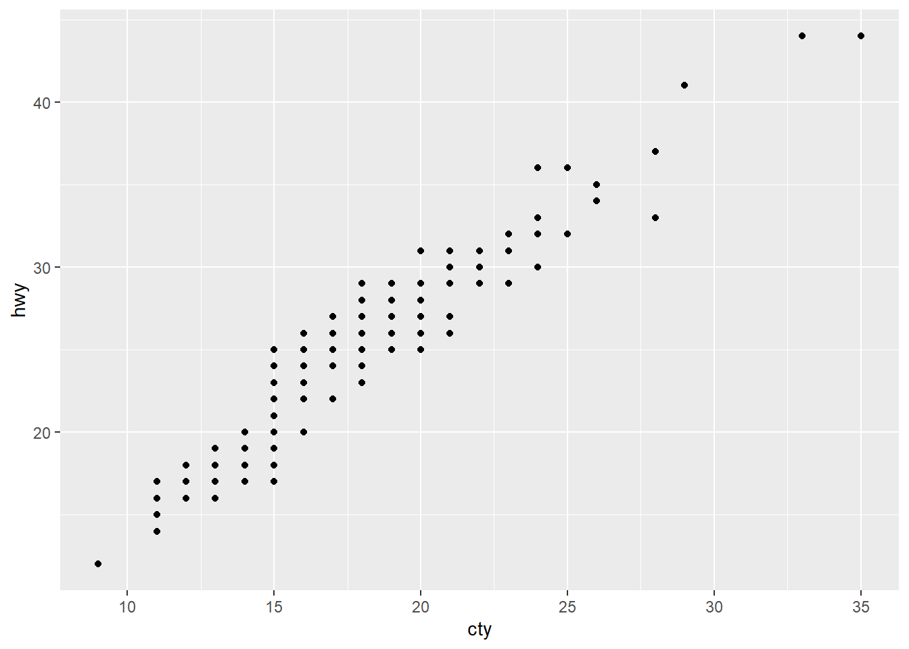

Iniciamos cargando la librería tidyverse, que automáticamente nos da acceso a ggplot2.
Encabezado 1
Encabezado 2
…
# Cargar libreríaslibrary(tidyverse)
── Attaching core tidyverse packages ──────────────────────── tidyverse 2.0.0 ──
✔ dplyr 1.1.4 ✔ readr 2.1.6
✔ forcats 1.0.1 ✔ stringr 1.6.0
✔ ggplot2 4.0.1 ✔ tibble 3.3.1
✔ lubridate 1.9.4 ✔ tidyr 1.3.2
✔ purrr 1.2.1
── Conflicts ────────────────────────────────────────── tidyverse_conflicts() ──
✖ dplyr::filter() masks stats::filter()
✖ dplyr::lag() masks stats::lag()
ℹ Use the conflicted package (<http://conflicted.r-lib.org/>) to force all conflicts to become errors
# Ojo que tidyverse ya trae incluido ggplot2()
Para esta sesión inicial, usaremos el datasetmpg (datos de vehículos) por su simplicidad.
# Explorar el dataset mpgdatos_autos <- mpg# Mostrar las primeras filashead(datos_autos)
# A tibble: 6 × 11
manufacturer model displ year cyl trans drv cty hwy fl class
<chr> <chr> <dbl> <int> <int> <chr> <chr> <int> <int> <chr> <chr>
1 audi a4 1.8 1999 4 auto(l5) f 18 29 p compa…
2 audi a4 1.8 1999 4 manual(m5) f 21 29 p compa…
3 audi a4 2 2008 4 manual(m6) f 20 31 p compa…
4 audi a4 2 2008 4 auto(av) f 21 30 p compa…
5 audi a4 2.8 1999 6 auto(l5) f 16 26 p compa…
6 audi a4 2.8 1999 6 manual(m5) f 18 26 p compa…
2 La Estructura Básica de ggplot2
La Gramática de los Gráficos indica que un gráfico se construye añadiendo capas. Para un gráfico simple, solo necesitamos tres componentes esenciales:
ggplot(data = ...): Define la base del gráfico y el data frame a utilizar.
aes(x = ..., y = ...): Define el mapeo estético, es decir, qué variables van a qué ejes.
geom_*(...): Define la geometría o tipo de gráfico (puntos, barras, cajas, etc.).
Ejemplo Básico: Las Capas Mínimas
Mostramos la relación entre cilindrada (displ) y consumo en carretera (hwy).
#2. Capa con variablesggplot(data = datos_autos, mapping =aes(x = displ, y = hwy))

#3. Capa con geomggplot(data = datos_autos, mapping =aes(x = displ, y = hwy)) +geom_point()

# 4. Capa con geom (eficiente)ggplot(datos_autos, aes(x = displ, y = hwy)) +geom_point()
# 5. Conectando ggplot con tidyverse (%>% | |> )datos_autos %>%ggplot(aes(x = displ, y = hwy)) +geom_point() +geom_smooth(method ="lm")
`geom_smooth()` using formula = 'y ~ x'

Mapeo Adicional: Para añadir una tercera variable, la incluimos en aes(). Aquí, el tipo de vehículo (class) se mapea al color.
ggplot(data = datos_autos) +geom_point(mapping =aes(x = displ, y = hwy, color = class))

3 Gráficos con una Variable (Univariados)
3.1 Variables Categóricas (geom_bar)
Usamos geom_bar() para ver la frecuencia de las categorías de una variable. Solo se necesita mapear el eje \(x\).
# Gráfico de barras de la variable 'class'datos_autos |>ggplot(aes(x = class)) +geom_bar()

3.2 Variables Continuas (geom_histogram)
Usamos geom_histogram() para ver la distribución de una variable numérica, como el consumo en carretera (hwy).
# Histograma de la variable 'hwy'datos_autos |>ggplot(aes(x = hwy)) +geom_histogram(fill ="darkred", color ="black") # Solo color para rellenar (fill) y borde
`stat_bin()` using `bins = 30`. Pick better value `binwidth`.

4. Gráficos con Dos Variables (Bivariados)
4.1 Continuas vs. Continuas (geom_point)
Gráfico de dispersión para ver la relación entre dos variables numéricas: consumo en ciudad (cty) y consumo en carretera (hwy).
datos_autos |>ggplot(aes(x = cty, y = hwy)) +geom_point()

4.2 Continua vs. Categórica (geom_boxplot)
Gráfico de caja y bigote para comparar la distribución de una variable continua (hwy) entre las categorías de una variable discreta (drv - tipo de tracción).
datos_autos %>%ggplot(aes(x = drv, y = hwy)) +geom_boxplot()